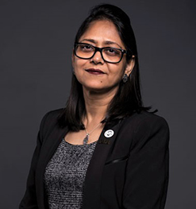
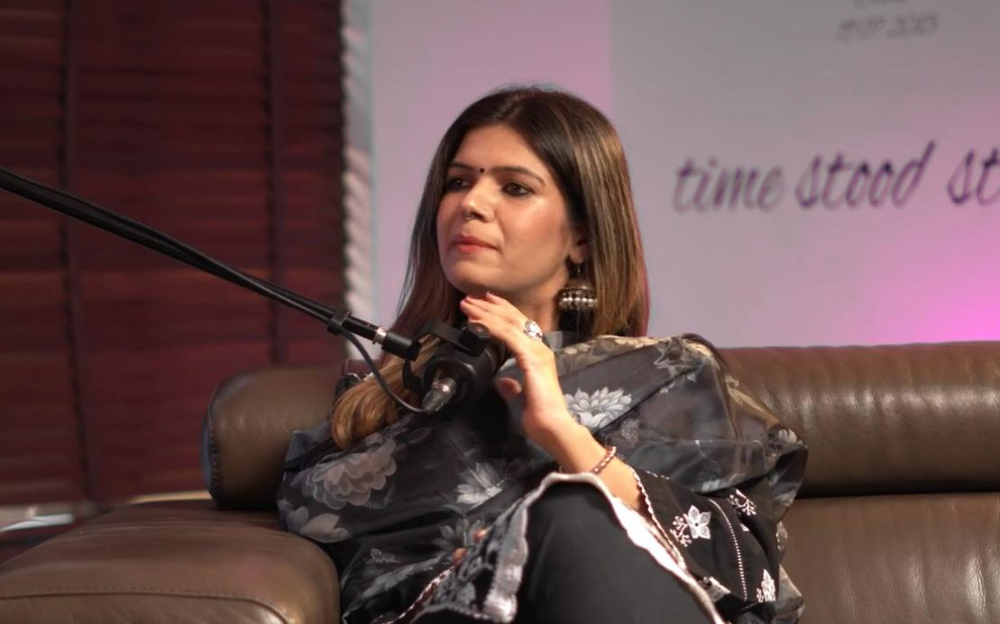
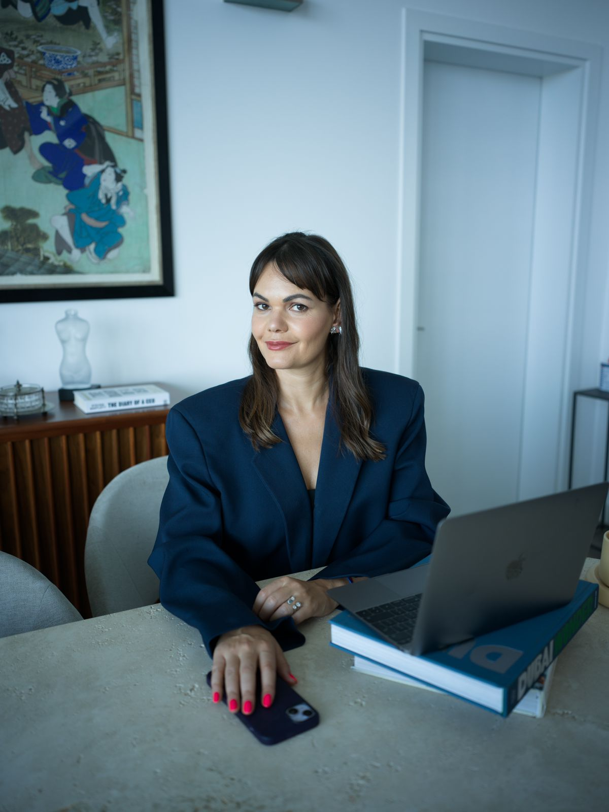
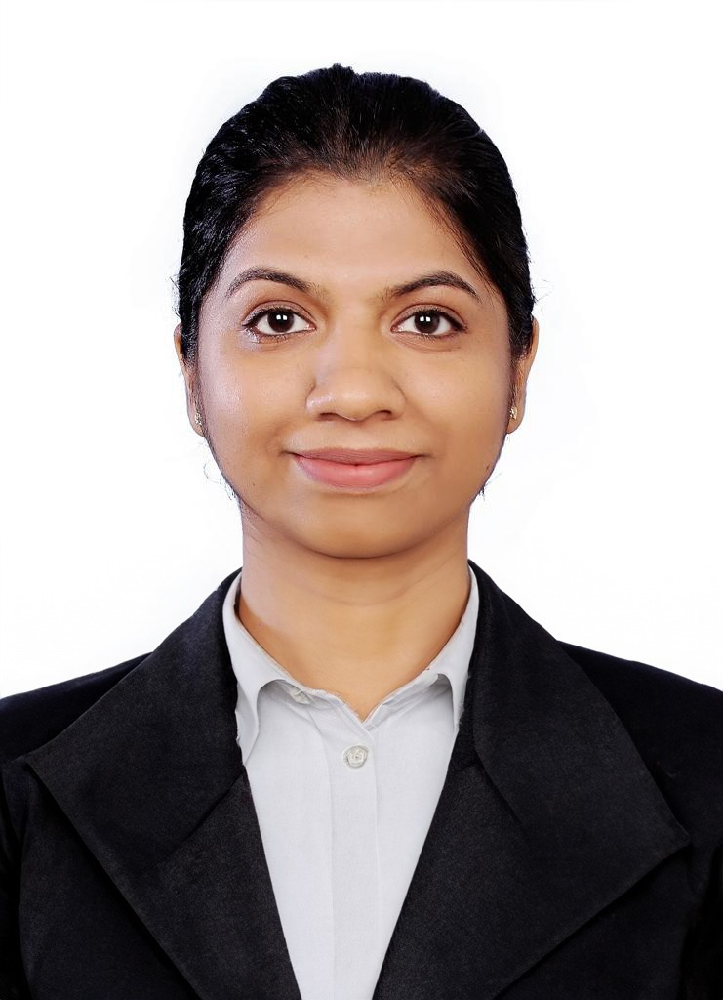
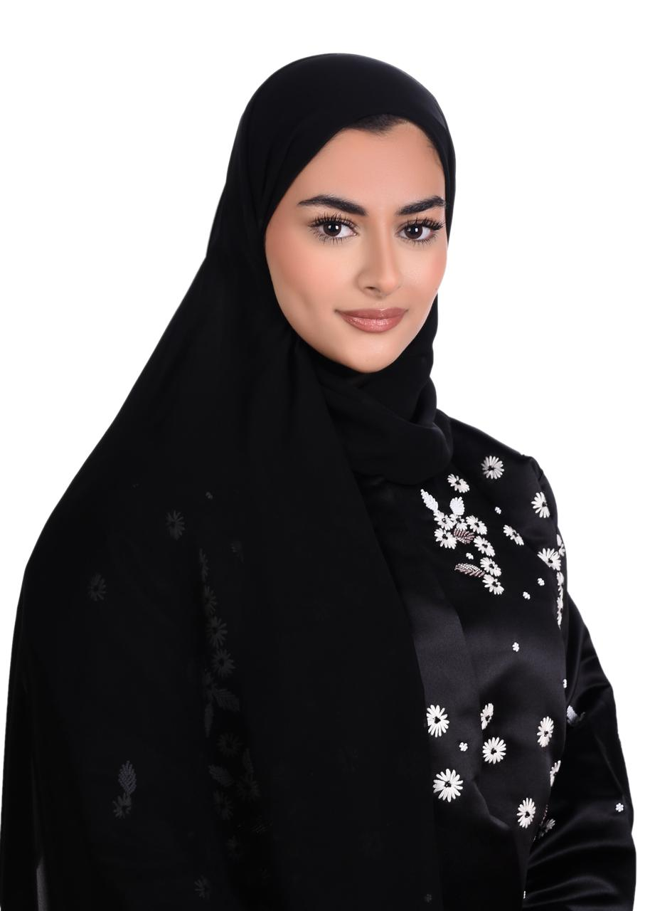
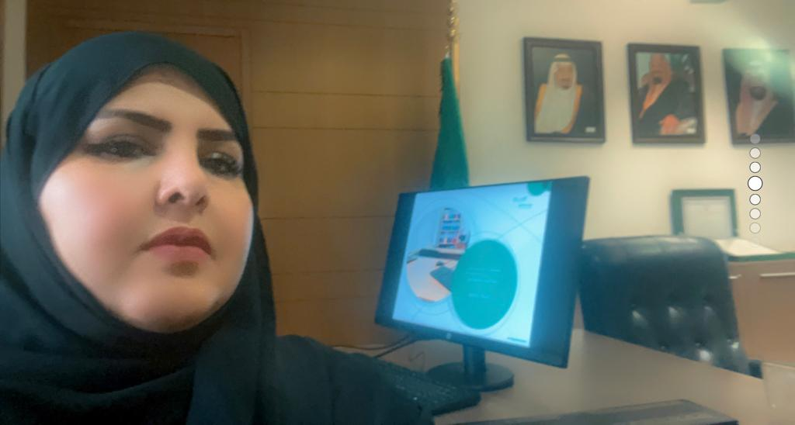
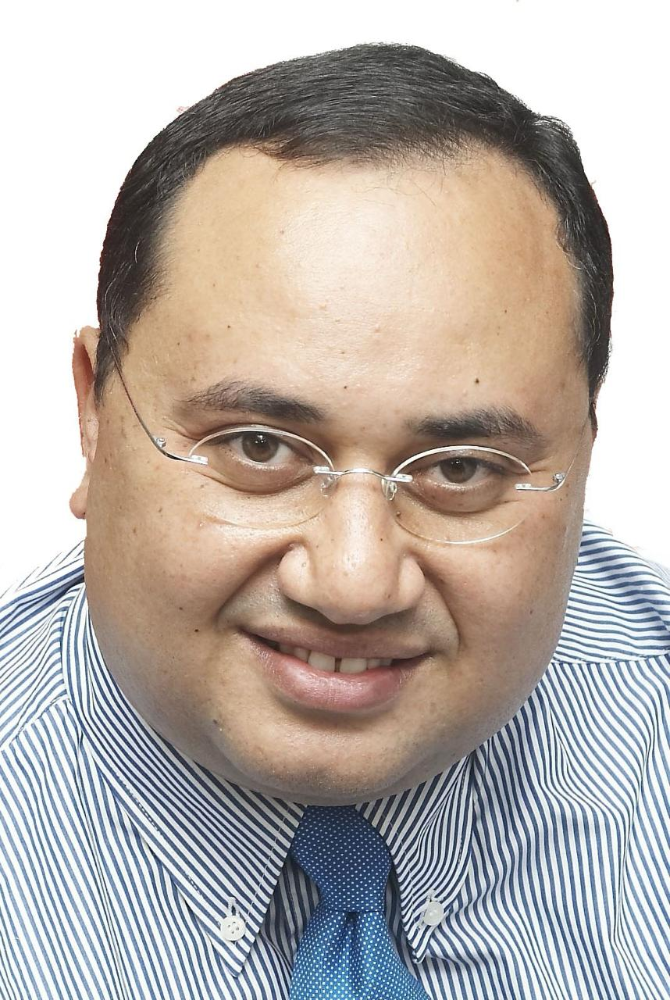
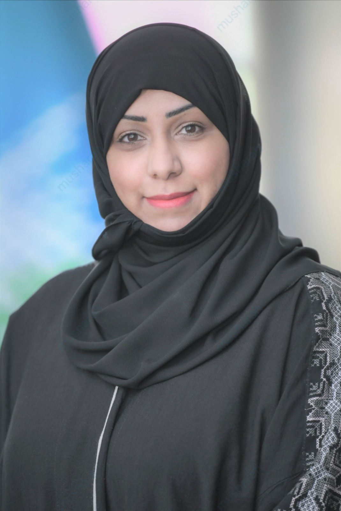
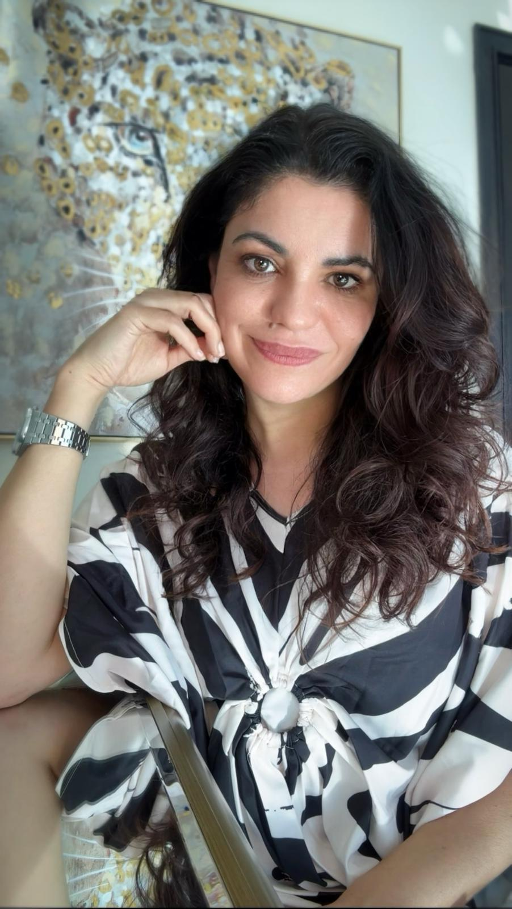

Datamatix Established Since: May 13, 1989 00:00:00:

27+
Years in Business

1250+
Successful Events

175000+
Satisfied Clients

340+
Media Partners

275+
Platinum Partners

180+
Other Supporters
In the Presence and Patronage of Sheikha Fatima bint Hasher Al Maktoum
Event Speakers

Prof. Singh

Sheikha Dr. Alia
Dr.Eng Suaad Al Shamsi
DR. SANDRA SAKSENA
Ms. Chandni Malhotra
Ms. Olga Fler
Ms. Hind Hassan Karam
Dr. Rfah Hadi Alyami
Mr.Asem Galal
Ms. AMANI MUSHARAH
Ms. ALMUDENA BERZOSA
More About Princess Doaa
Princess Doaa
More About Dr. Dena Assaf
Dr. Dena Assaf
United Nations Resident Coordinator,
Bio:
Dr. Dena Assaf is the United Nations Resident Coordinator for the United Arab Emirates and the Deputy Commissioner-General of the United Nations at Expo 2020.
Dr. Assaf has been with the United Nations for over 20 years in various senior management positions and advisory roles in both UN headquarters, supporting the Arab region, and in country offices. She has worked with the United Nations Development Program (UNDP), United Nations Entity for Gender Equality and the Empowerment of Women (UN Women), United Nations Department of Peace Keeping (UN DPKO), and United Nations Sustainable Development Group (UNSDG).
While with UN Women, Dr. Assaf was the Regional Director for the Arab States, and worked to promote gender equality and the empowerment of women in the Arab region. While with UN Women she spearheaded a new regional strategy to strengthen the economic, political, and social rights of women in the Arab region. Prior to joining the UN, Dr. Assaf was in a leadership role in establishing the national development planning process for Palestine and led Palestine’s first several national development plans. She has also held academic positions, as well as advisory roles in civil society.
Dr. Assaf is an engineer with degrees in Architecture, Urban Design, and Urban Planning. She is an artist in her own right, and believes in the voice and important role of all creative communities in advancing development and human rights in our societies. Dr. Assaf is a Palestinian and American, and is fluent in both English and Arabic.
More About Dr. Anna Dolidze

Dr. Anna Dolidze
Parliamentary State Secretary, Republic of Georgia
Bio:
Dr. Anna Dolidze was born in Tbilisi, in what was then the Soviet Socialist Republic of Georgia. As a child, she experienced the dissolution of the Soviet Union, including a civil war and secessionist conflicts with Abkhazia and South Ossetia. In high school Dolidze won a scholarship to live with an American family and attend high school in Vermont. Upon her return, Dolidze started law school at Tbilisi State University, where she graduated with honors.
In her final year she took part in the Telders International Law Moot Court Competition, and was honored as the Best Respondent and Best Oralist. She became a clerk at the Permanent Court of Arbitration in the Hague. Thereafter Dolidze worked for the international humanitarian organization Save the Children in Georgia. She was awarded a full fellowship by the Dutch government to study at Leiden University where she earned Masters Degree in International Law (LLM). In 2004 Dolidze was elected Chairperson of the Georgian Young Lawyers’ Association (GYLA). As the head of the largest legal advocacy organization in Georgia, she oversaw program activities conducted by 125 lawyers, took part in drafting legislative reform proposals, practiced civil rights litigation and represented the organization in National Constitutional Commission, Commission for the Human Rights in Prisons and the Expert Commission for Georgia’s European Integration. In 2006, Dolidze spearheaded a nation-wide campaign to prosecute high-level government security officials implicated in the murder of Sandro Girgvliani. In 2007 Dolidze left Georgia for United States as a Scholar at Risk because it was increasingly difficult to practice civil rights litigation.
Dolidze has lectured transnationally, including at Duke University, Sorbonne University, University of Berkeley, Cambridge and Oxford Universities, Queens University of Belfast and Elmira Maximum Security Correctional Facility in New York State. She conducted human rights documentation and research for Russia Justice Initiative and Human Rights Watch. Then she earned her Doctorate in Law (SJD) at Cornell Law School with full financial scholarship and residential fellowship at Telluride House. In 2012 Dolidze addressed the Tom Lantos Human Rights Commission of the United States Congress on human rights violations in Georgia. In 2013 she became assistant professor of law at the University of Western Ontario, where she taught property law and international law.
In May 2015 Dolidze was appointed as Deputy Minister of Defence for Republic of Georgia, overseeing the areas of education, social benefits and rehabilitation of wounded warriors. In June 2016 the President of Georgia appointed Dr. Dolidze as the Parliamentary Secretary of the President of Georgia (i.e. chief legal adviser), overseeing rule of law related issues as well as serving as the main liaison between the office of the President and the Parliament of Georgia.
Dr. Dolidze has published widely on international law, human rights and transitional justice in academic as well as policy journals.
More About HRH Princess Lamia
HRH Princess Lamia
Secretary General and member of the Board of Trustees ,Alwaleed Philanthropies
Bio:
HRH Princess Lamia Bint Majed Alsaud’s Biography:
HRH Princess Lamia Al Saud is the Secretary General and member of the Board of Trustees at Alwaleed Philanthropies. For over 37 years, Alwaleed Philanthropies has supported and initiated projects in over 164 countries regardless of gender, race, or religion. The foundation collaborates with a range of philanthropic, government, and educational organizations to combat poverty, empower women and youth, develop communities, provide disaster relief and create cultural understanding through education. Working with its partners, Alwaleed Philanthropies seeks to build bridges for a more compassionate, tolerant, and accepting world.
Princess Lamia was appointed Secretary General on 1 April 2016, having previously served as Executive Manager of Media & Communication at the foundation. She is the daughter of Prince Majed bin Saud, the son of King Saud bin Abdulaziz Al Saud.
Princess Lamia earned her Bachelor of Arts degree in 2001 from Misr International University, Cairo, majoring in Public Relations & Marketing Advertising and minoring in Journalism. In 2003, she started the publishing company, Sada Al Arab. The company produced three magazines and was operated from Cairo, Beirut and Dubai. She also became a partner in a number of marketing companies based in Egypt, Lebanon and Saudi Arabia in 2006.
In 2010, the Princess published her first novel, Children & Blood, through Dar Al Saqi, one of the most respected independent publishing companies in the Middle East. The book tackles the complex issue of honour killings, and reflects on the harsh realities with which women in the Middle East are faced with.
In 2017, HRH Princess Lamia, Secretary General of Alwaleed Philanthropies received an honorary medal from the Vice President of Laos, Dr. Phankham Viphavanh in recognition of HRH’s philanthropic efforts in the country. In the same year, Princess Lamia Bint Majed Al-Saud was announced winner of the Achievement in Philanthropies Award at the Arab Women of the Year 2017, held in London.
Princess Lamia received the first of its kind “Change Maker Award” at the Aid & Trade Conference in London in recognition of Her Royal Highness’s humanitarian and philanthropic efforts worldwide. Her Royal Highness was also presented with National Council’s first-ever Philanthropic Leadership Award to HRH in Washington, DC, “in recognition of HRH’s efforts to contribute to a more compassionate, tolerant, and accepting world.”
More About Prof. Singh
Prof. Singh
Provost/Vice President For Academic Affairs,
Bio:
A staunch supporter of quality education with a strong commitment to academic excellence and unwavering dedication to the success of students, Prof. Abhilasha Singh is a Provost/Vice President of Academic Affairs at the American University in the Emirates.
With a teaching and administrative experience spanning more than three decades, Prof. Singh holds a Doctorate in Psychology and have also added to her academic credentials, an executive program in Leading People from Sloan School of Management, MIT, and in Human Resource Management from one of the top most business school in India, Indian Institute of Management (IIM-C). Her professional credentials spans from being a Certified Practitioner from the Society for Human Resource Management (SHRM-CP) to a Certified Licensed Practitioner of EQ-i/ EQ 360 from MHS, Inc., Canada, Certified Trainer from HRD Academy, UK, Certified Professional Assessor from IPM, Canada and a Certified MBTI practitioner by CPP-Asia Pacific and apart from my research I enjoy training and consultancy in Personality Typology, Stress Management, leadership, Team Building, Communication and other Behavioral Aspects.
Throughout her distinguished career, she was engaged in a series of academic administrative positions at various institutions and have been engaged in providing strategic directives at a senior leadership role and ensuring its implementation with determination, while working closely with the University President and senior administrative colleagues. In addition to advising the Board on strategic directives and liaising effectively between the President and the members of the Board as General Secretary of the Board of Trustees at American University in the Emirates, she was actively engaged in monitoring compliance with prescribed standards and mandating administrative requirements, through leading and developing highly effective team for operational excellence both as the Vice President for Research and Advancement and as Dean for College of Education, in addition to her role as Director of International Office.
While she was actively engaged in her administrative role, she never let the researcher within her die and her passion for research resulted in many published articles in national and international journals of high repute and also in frequent invitations to numerous speaking engagements to present my research to national and international audiences. A keen researcher and a prolific writer, Prof. Singh has published more than 30 papers, articles and many case studies pertaining to the GCC region in national and international journals in the area of managing people like talent management, leadership, employee value proposition, stress management, knowledge management etc., while also being engaged in ensuring accreditation compliance documents for national and international accreditation for institutional effectiveness.
She also had served as President and CEO of the College of Fashion and Design, accredited by the UAE Ministry of Education, while concurrently serving as strategic advisor (honorary position) to the President of American University in the Emirates, Dubai and as Chief Mentor at the Institute of Management Technology-Dubai, School of Management Sciences, India and Effat University in the Kingdom of Saudi Arabia, with rich and varied experience as a faculty, researcher, academic administrator and scholar.
Prof. Singh’s efforts in education sector was acknowledged through many awards and accolades from various national/ international organizations including the best Indywood Award for Educational Excellence-2017, Best Researcher Award in 2015, ‘Education Leadership Award’, on August 1st, 2014 by Asia’s Education Excellence Award, Singapore, ‘Award for Teaching Excellence’ in the year 2013 by INDUS Foundation USA, and ‘Distinguished Service Award’ in the year 2009 by the Association of Indian Management Scholars-International apart from being the first to receive the fellow title from International forums of Management Scholars (INFOMS), USA award to foster excellence in management education awarded in March 2014.
Needless to mention, her commitment to teaching and research excellence led to many research grants, including from the National Research Foundation, Ministry of Higher Education and Scientific Research on “From Education to Employment: Identification of Key Priorities for Employability of Emirati Nationals in Public and Private Sector”. While committed to bring educational excellence, she serves on the Board of many institutions and shatters the glass ceiling while truly believing in making a difference in facilitating quality education in the Higher Education.
More About Sheikha Dr. Alia
Sheikha Dr. Alia
Social Development Expert – Community Development Authority,Obstetric & Gynecologist Specialized In Aesthetic Gynecology – Algarhoud Private Hospital
Bio:
Shaikha Dr. Alia Humaid AlQassimi, is a social development expert at the Community Development Authority. Her main duties consist of providing expert leadership & direction by articulating Dubai Gov. vision to CDA strategic business units and creating actions towards the achievement of CDA corporate goals. Prior to that, Al Qassimi was the Acting CEO of the Social Care & Development Sector in Dubai’s Community Development Authority (CDA). She led a core sector represented by five main departments: Family Cohesion, Elderly, Social Cohesion, Disability and the vulnerable groups by developing high standard programs that ensure availability and access to services in the community. AlQassimi joined CDA in 2014 as Director of the Social Care & Inclusion Department, with a Bachelor Degree in Medicine and Surgery from Dubai Medical College (DMC) and Masters in Healthcare Management from the Royal College Surgeons in Ireland (RCSI), she has also been certified as a Chief Innovation Officer (CCIO) by Boston College. In addition to her position, AlQassimi is an Obstetric Gynecologist practicing in Al Garhoud Private Hospital in Dubai and is the first emirati as a senior member in the European Society of Aesthetic Gynecology delivering innovative techniques. AlQassimi’s efforts and hard work was the reason she was appointed for several renovation and development projects nationally and internationally. She has recently been appointed by H.H Sheikh Hamdan Bin Mohammed Bin Rashid Al Maktoum – crown prince of Dubai- to the board of directors of Dubai Autism Center. She is a founding board member of Friends Of Cancer Patients(FOCP), and a founding board member of the Royal College Of Surgeons in Ireland Alumni Dubai chapter where her portrait has been chosen as the first to be raised on the College “Leaders with an impact” wall. She was selected amongst women leaders to participate in the Women Leadership Exchange Program between UAE and Sweden, and was an elected board member of the Women for Sustainable Growth (W4SG)-an International NGO. Dr. AlQassimi -in addition to being a public figure and mother of five- has won “Inspirational Woman of The Year 2016” by the Arab Woman Award, and “Woman Leader in community Development Excellence Award” category of the 17th Middle East Women Leaders Excellence Award in 2017. Shaikha Dr.Alia AlQassimi is a graduate of Mohammed Bin Rashid Centre of Leadership Development Impactful Leaders Program & an assessor of Mohammed Bin Rashid Government Excellence Award 2018.
تقدم الشيخة الدكتورة علياء بنت حميد القاسمي، نموذجاً متكاملاً لشخصية المرأة الرائدة في مجال القيادة في الحكومة والحياة بشكل عام، حيث تجمع بين حزمة واسعة من الخبرات والمعارف العلمية والعملية والمهارات الإنسانية والحياتية، مترجمة باختصار رؤية دولة الإمارات للمرأة الرائدة التي تقود أمتها ومجتمعها لمصاف الدول المتقدمة. تشغل الدكتورة علياء بنت حميد القاسمي منصب خبير تنمية اجتماعية في هيئة تنمية المجتمع بعد أن عملت كمدير تنفيذي لقطاع التنمية الاجتماعية والرعاية، حيث ترأس محور الحماية الإجتماعية و تشرف على تنفيذ استراتيجية أصحاب الهمم في إمارة دبي وعدد من أهم المشاريع والبرامج في الهيئة المعنية بمختلف فئات المجتمع والفئات الأكثر عرضة للضرر، لضمان تحسين جودة حياتهم و أسرهم، ودمجهم بشكل مدروس وفعَال في مختلف نواحي المجتمع. كما تمارس مهنتها كطبيبة وأخصائية أمراض نسائية وتوليد في مستشفى القرهود بدبي؛ حيث أنها أول اماراتية في تخصص الترميم و التجميل النسائي و أول إماراتية في عضوية الجمعية الأوروبية للتجميل النسائي. قبل انضمامها لهيئة تنمية المجتمع، شغلت القاسمي عدداً من المناصب الإدارية في مجال إدارة الخدمات والمرافق الطبية في هيئة الصحة بدبي، وعلى هامش عملها آنذاك كأخصائية أمراض نسائية وتوليد في مستشفى لطيفة بدبي، فقد تولت رئاسة قسم الطوارئ بين العامين 2013 و2014، حيث عملت على تطوير ومراجعة السياسات واللوائح استناداً إلى أحدث المعايير العالمية، وتأهيل فريق عمل لتطبيق مرحلة الانتقال السلسة إلى الأنظمة الحديثة، ووضع وثيقة المبادئ والمعاييرالتصنيف الشاملة لسرعة الاستجابة لحالات أمراض النساء والتوليد الطارئة. وكانت القاسمي قد تولت قبل ذلك منصب مديرة إدارة التعليم الطبي و تطوير العمال بالهيئة، حيث قامت بإنشاء قسم لتطوير الإجراءات وخدمات الشركاء، بما في ذلك الإجراءات المالية وتخطيط الميزانيات والفعاليات الاستراتيجية. وتولت الشيخة الدكتورة علياء إدارة عيادات صحة المرأة في مراكز الرعاية الصحية الأولية التابعة للهيئة على مدار عامين، ومسؤولية فريق التغيير والاتصال خلال عملية تحول دائرة الصحة والخدمات الطبية إلى هيئة الصحة بدبي. انتخبت الدكتورة علياء في العام 2006، نائباً لرئيس شعبة أمراض النساء والتوليد في جمعية الإمارات الطبية، وفي العام 2011، تم انتخابها لعضوية مجلس أمناء الجمعية، كما أنها كانت عضو مؤسس لجمعية أصدقاء مرضى السرطان وشغلت لفترة منصب نائب الرئيس للجمعية منذ العام 1999. و تم تعيينها في مجلس إدارة مركز دبي للتوحد في 2017 بمرسوم من الشيخ حمدان بن محمد بن راشد آل مكتوم. مثلت القاسمي المرأة الإماراتية القيادية في الخارج سواءً على المستوى العملي أو الشخصي. حيث اختيرت ضمن الوفد الرسمي الممثل لحكومة الإمارات في اجتماعات الأمم المتحدة لدول الأطراف في اتفاقية حقوق الأشخاص ذوي الإعاقة وعرضت آخر مستجدات خطة دبي 2021 واستراتيجية دبي للإعاقة 2020. كما اختيرت ضمن عدد من القيادات النسائية الإمارتية لبرنامج القيادات النسائية للتبادل المعرفي مع مملكة السويد. و شغلت منصب عضو مجلس إدارة في منظمة نساء للتنمية المستدامة العالمي (W4SG)، ومنصب عضو مجلس إدارة الكلية الملكية للجراحين في إيرلندا- ملف دبي (RCSI) و اختيرت كأول شخصية قيادية ذات أثر تم تدشين جدار الجامعه بها في دبي، و هي أول إماراتية تحصل على عضوية الجمعية الأورببية لعمليات التجميل النسائي (ESAG) . تقوم القاسمي بصفتها الشخصية دعم عدد من مبادرات المنظمات والجمعيات غير الربحية منها مؤسسة دبي العطاء وحملات التوعية بأمراض سرطان الثدي والقولون وتقدم ندوة سنوية بمرض ألزهايمر، وتحرص على المشاركة مع أبنائها في المسيرة من أجل التعليم والتي تنظمها "دبي العطاء" للتوعية بصعوبات الحصول على التعليم في البلدان الأقل حظاً. كما تحرص القاسمي على تخصيص جزء من وقتها للتوعية المجتمعية ونقل المعرفة، حيث كانت صاحبة فكرة تدريب أمهات المستقبل وتولت بنفسها تدريب دفعتين من طالبات كلية الدراسات الإسلامية بدبي على المهارات الحياتية والإسعافات الأولية. فازت بجائزة "المرأة الملهمة لعام 2016" ضمن جائزة المراة العربية، كما حازت على جائزة "المرأة العربية المؤثرة اجتماعيا" في عام 2016 من جمهورية مصر العربية ، و "المرأة القيادية المتميزة في تنمية المجتمع لعام 2017" ضمن جائزة الشرق الأوسط السابعة عشرة لتميز القيادات. تحمل القاسمي، عدداً من الشهادات المهنية التخصصية منها، شهادة البكالوريوس في الطب والجراحة من كلية دبي الطبية، وماجستير في إدارة الرعاية الصحية من الكلية الملكية الإرلندية للجراحين، كما أنها حاصلة على شهادة المدير التنفيذي للابتكار المعتمد من كلية بوسطن – الولايات المتحدة الأمريكية.هي خريجة برنامج "القيادات المؤثرة" التابع لمركز محمد بن راشد لإعداد القادة ، وهي ضمن 80 خبيرا من الكفاءات الوطنية من مقيمين جائزة محمد بن راشد للآداء الحكومي المتميز و التي تعد أرفع جائزة للتميز الحكومي في الدولة.
LinkedIn, Twitter, Instagram: @DrAliaAlQassimi
More About Dr. J. Shahdadpuri
Dr. J. Shahdadpuri
Managing Director, Founder,Nikai Group of Companies
Bio:
Jean is an entrepreneur with a sole purpose of making a difference in the lives of the people around her. She has a passion for innovation and driving change. She has transformed the face of global companies right from starting the Young Entrepreneurs Incubation Centre at University of California to leading the Opioid Collaborative Task Force and the Right Care Initiative for Diabetics with Heart Disease for the entire State of California. She has been a potent force in achieving successful outcomes in disease management and behavioral health issues in the US. She comes with a diverse experience of 28 years spanning various geographies in industries like healthcare, technology and trading. She left the corporate world after working at C-level at Centene Corporation, a FORTUNE® 50 company, multi-national healthcare enterprise with a revenue of over $124 Billion. She moved to be with her family after realizing how COVID 19 could change the lives of many and the importance of cherishing time with your family. She started Ardent Consulting Solutions during the pandemic after looking at the gaps in the care in the healthcare delivery system. Ardent is a vertically integrated company within the Behavioral and Mental health space. With its track record of providing Digital Marketing and Technology services to its clients for the last 5 years, Ardent has made a meaningful impact within the industry. Having developed the expertise and a team of subject matter experts our vision is to provide an integrated suite of technology, clinical services and data driven outcome-based models powered by Artificial Intelligence & Machine Learning, to enable the journey to Sobriety and Mental Wellness. “Define success on your own terms, achieve it by your own rules, and build a life you’re proud to live.” She plays the Sitar and is an advanced certified scuba diving instructor.
More About Ayesha Omayr
Ayesha Omayr
Digital Entrepreneur,Digital Entrepreneur
More About Dr.Eng Suaad Al Shamsi
Dr.Eng Suaad Al Shamsi
aircraft engineer – technical advisor
Bio:
Company : woman in aviation Middle East | L2L consultation company/ Shehana
Owner of : top takeoff program | dream high program
Email : suadalshamsi2016@gmail.com
Contact + WhatsApp : +971525545554
Social media : dr.Eng.suaadalshamsi
She graduated with DBA in aviation management from American academy for specialized studies as well as he she is holding MBA from Coventry University in aviation management, Master in Aeronautical engineering from coventry university as well as she is holding degree in Aerospace Engineering from Hertfordshire University along with Bachelor’s degree in aviation management in UK.
She has honored an honorary Doctorate for the role of women in leadership and women empowerment.
She embarked on this journey in the aviation industry when she joined many leading companies involved in aviation as a part of her training in aircraft engineering field such as Messier Bugatti, Honeywell, Kunz, Airbus and Boeing. She joined emirates airlines as first aircraft engineer in UAE and been working in maintenance field for more than 17 years and continue her growth in the aviation and now she is working as technical advisor for one of the biggest aviation project in UAE.
She is one alumni members of the emirates association in the UK, one of members of IEEE, as well as one of the founders of woman in aviation organization Middle East chapter. Also VP women in aviation ( shenana) beside she is the chief executive officer of L2L [learn to live] consultation company. She is the Ambassador of the international union for technical education in UAE and starting her own aviation program called [ top takeoff ] to empower young girls and women in enter the aviation industry.
Awarded many awards and appreciate during her young journey as she been in awarded :
1- The best female influencer in aviation field for year 2023 woman in aviation under the patronage of HH sheikh Ahmed bin Saeed al maktoum.
2- Emirates women award under the patronage of HH sheikh Ahmed bin Saeed Al Maktoum
3- Committed to sustainability initiatives of women in aviation sustainability award under the patronage of HH sheikh Ahmed bin Saeed al maktoum.
4- Future innovation award under the patronage of HH Sheikh Saqr bin Muhammad Al Qasimi
5- Gold award from Emirates group as a role of Emarati lady engineer, beside her awarded of fast track award from Emirates airline.
6- Emaratia shield privilege in Abu Dhabi and creative women in aviation engineering by shiekha fatima bint khalid alqasimi.
7- The Oscars accomplished Arabs and the women award for arab creativity.
She has been outstanding representing United Arab Emirates Female image in Shanghai Expo 2010 and presenting as a jury member in star of Science program. She is the main jury in James dyson awards in UAE for four years.
Her name included in creative women in UAE Wikipedia by her highness sheikha shamsa wife of Sheikh Khalifa.
She been speaker in many forums and conferences in UAE, gulf countries and worldwide such as woman in aviation conference in Dubai world trade Centre 2019, powerful woman in Egypt opera in 2019, woman in aviation industry forum in Bahrain in 2018, aviation gathering forum in Bahrain in 2018, top of her game in emirate tower, powerful woman engineer in new York city in 2018.. Etc.
Besides the love of aviation, she loved reading and seeking knowledge and through her love she released Novel books one in 2016,second one in 2017 and two in 2018.
More About DR. SANDRA SAKSENA
DR. SANDRA SAKSENA
EXECUTIVE EDITOR OF CELESTIA BRITAIN'S FIRST DIGITAL MAGAZINE FOR WOMEN ENTREPRENEURS
Bio:
Dear Sandra Saksena, I welcome you on behalf of the Government of the Republic of Tatarstan. Kazan, the capital of the Republic of Tatarstan, hosts the 15th International Economic Forum "Russia – the Islamic World: KazanForum 2024" on May 14 to 19, 2024.
For 15 years, the Forum has been the main federal platform for economic cooperation between the subjects of the Russian Federation and the countries of the Islamic world, as well as the leading international platform for discussing cooperation and implementing joint projects, presenting mutual economic opportunities and investment potential.
The Forum will feature the “Women’s Perspective” track, whose speakers will be successful women entrepreneurs and politicians from Islamic countries. During the track they will discuss women's success stories, their growing role in politics, as well as Islamic fashion trends, in addition, there will be a lecture on healthy eating according to the Sunnah.
Your personal participation will undoubtedly enrich the program of the event!
More detailed information can be found at the link and on the official website of the event: www.kazanforum.ru. We will be happy to answer all your questions: info@kazanforum.ru; +7 843 2103027, +79274102173.
More About Ms. Chandni Malhotra

Ms. Chandni Malhotra
Bio:
Chandni Malhotra, the Director and CEO of Malhotra Legal Consultancy, FZ LLE, is an Indian professional with a passion for law and education. Born on October 2, 1989, Chandni is fluent in Hindi, English, and Punjabi. She holds Master of Laws and Political Science from the University of Delhi, India, as well as several postgraduate diplomas in specialized areas of law. Chandni's professional journey has seen her work as a practicing advocate in Delhi Courts, teach law to over 2500 students, and serve as a law professor.
In pursuit of her entrepreneurial dreams, Chandni moved to Dubai three years ago and within a short span of time, she founded her own legal consulting firm. Her vision is to provide affordable legal assistance to expats in need, regardless of their financial situation. Inspired by visionaries such as Mahatma Gandhi and Dr. B.R. Ambedkar, Chandni aims to empower others and promote peace and humanitarian principles globally.
With a strong presence on Instagram under the handle @dubaifactology, reaching a dedicated following of over 25k individuals, she is known as a Creator and Educator providing valuable insights on Dubai rules and laws. In January 2024, she had the privilege of being a Podcast Guest on Women of Wonder with Reema Mahajan, where she delved into topics such as entrepreneurship challenges for women in Dubai and legal misconceptions in the business realm. In pursuit of knowledge, she continues to engage in self-learning of UAE law to broaden her understanding of legal regulations and further enhance her professional expertise in compliance and legal matters.
Life-changing moments for Chandni include turning vegan, leaving behind a successful law practice in India to become an entrepreneur in Dubai, and receiving accolades from the Chief Justice of India. She is also a seasoned solo traveler, having visited 18 countries in the past three years. Chandni's belief in spirituality drives her to be a better version of herself daily and uplift as many lives as possible.
With a goal to inspire women worldwide and make India proud on an international stage, Chandni's journey is one of resilience, dedication, and a commitment to fostering humanity.
More About Ms. Olga Fler

Ms. Olga Fler
Bio:
Olga Fler is an entrepreneur, marketing specialist, startup owner, CEO at Meet For Charity and co-founder of Akademy Dubai Club.
Olga started her first business in PR as early as when she was 19 years old, with Mercedes Benz, Jaguar, Audi, Estée Lauder, Chanel, and such among the clients. In 2013, she took interest in social projects and charity work and, together with her colleague, created her first charity community, Handmade Charity. That was a project for children with special needs which now takes place every Sunday in Moscow restaurants helping those families to socialize and promote inclusion. A few years later, Olga became a trustee of an orphanage, and then her values finally turned towards social projects.
In 2016 she founded Meet For Charity, a social fundraising project that helps charity funds raise money by connecting people at unique auctions. The auction raised over $3 mln to date. It’s been the biggest and most well-known online charity auction in Eastern Europe to date.
In 2021 she was voted the winner of EY “Business women 2021” in “Social entrepreneurship” category.
Since 2022 she has been the co-founder of Akademy Club Dubai – an intellectual members’ circle uniting those who seek personal betterment through the power of education. The club boasts academics, creatives, business thought leaders, etc among its members.
Olga Fler is the author of “Every Meeting Counts”, the book that was in September, 2020. The book is a compilation of 30 inspiring stories from 30 distinguished people such as businessmen, artists, scientists, writers etc Each of them speaks about one encounter that became a turning point in their lives.
More About Ms. CHANDANA PV

Ms. CHANDANA PV
Bio:
CHANDANA PV is an experienced Data analyst with a strong background in the Telecom industry. Over the past four years, I have focused my efforts on specializing in Data Analysis and Visualization.
Reliance Jio platform limited, India
Data Analyst (Network team)
- Analyzed complex datasets from more than 10K active eNBs & over 2 million subscribers to monitor Network KPIS & track progress towards goals.
- Extracted & Transformed PAN INDIA reports from Jio data base using SQL query
- Built reports and dashboards using Power BI and Excel
- Provided statistical analysis on new features deployed in the network and derived an insight into relation on customer experience improvement.
- Led Customer Churn analysis, where in customers facing consistent network issues are identified and towers in which high customer complaints recorded are proceeded for priority optimization, resulted in a 15% reduction in churn rate.
- Automated KPI reports and dashboards using Python Numpy and Pandas library which reduced analysis time by 10+ hours per week.
Reliance Jio, India
RF planning & Optimization
- Implemented algorithm to identify Line of Sight pairs of overlapping sites with geospatial analytics. Achieved 98 % subscriber coverage with minimum towers using python Numpy & Panda libraries.
- Collaborated with cross functional teams on improving network KPIS/dealing customer complaints.
- Identified and analyzed network coverage gaps and provided recommendations for site optimization and expansion
EDUCATION
National institute of Technology, Calicut
Bachelor of Technology, Electronics & Communication
SKILLS & OTHER
- Analytical tools: Power BI (Power Query, DAX, Data modeling), Advanced Excel (Power query, Power Pivot, DAX Basics, VLOOKUP, XLOOKUP, Index & Match, Basic macro, conditional formatting), Google sheets
- Programming languages: SQL (Structured Query Language), Python (Pandas, NumPy, Matplotlib)
- Database: MySQL
- Soft skills: Analytical skills, Excellent communication, Problem solving , Self-driven , Team player
ACHIEVEMENTS
- Ranked among Top 2 % in All India Engineering Entrance Exam 2011 (Out of 1Million+ Candidates)
PERSONAL PROJECT EXPERIENCE
- Business 360 Analysis: Designed a powerful dashboard to drive insights from Consumer Goods industry. Suggested recommendations & areas of improvement for increasing sales by at least 10 % [Power BI | Excel |SQL| DAX Studio] Click here for live Dashboard
- Adventure works sales Analysis: Designed a powerful dashboard to track KPIs (sales, revenue, profit, and returns), compare regional performance, analyze product-level trends and forecasts, and identify high-value customers. [Power BI | Excel ] Click here for live Dashboard
More About Ms. Hind Hassan Karam

Ms. Hind Hassan Karam
Bio:
Hind Hassan Karam, an Emirati graduate of the American University of Sharjah, with a double major in Economics and Finance who is currently employed as a Tax Policy Analyst at the Federal Tax Authority. Successfully running three businesses; a beauty salon, a modest clothing line and a perfume line. Inspired by the strong Emirati women surrounding her, she is passionate about business and had a strong entrepreneurial mindset.
More About Dr. Rfah Hadi Alyami

Dr. Rfah Hadi Alyami
Bio:
Work Experience
- Consultant to the deputy of the Ministry for Educational Programs from February 2022 until now.
- Head of Knowledge Management at the Education Policy Research Center at the Ministry of Education.
- Contributed to the establishment of the secondary school pathways project and build its strategic plan in the Ministry of Education
- Training the occupants of educational positions at the National Institute for Professional Development and building training packages.
- Training faculty members at King Saud University in the field of research.
- Contributed to the establishment of a scientific journal for the Arab East College.
- Academic Guidance Officer at the Arab East College at the Women's Department.
- Member of the Center for Research and Consultancy Studies at the Arab East College for Post-Graduate Studies.
- Faculty member in the Department of Educational Administration and Supervision for Graduate Studies at Arab East College.
- Head of the Development and Follow-up Unit at the Arab East College for Post-Graduate Studies.
- Member of Schools’ Governance within the senior leadership in Bolton from 2013 to 2017.
- Principal of the primary school 2004/ 2006.
Academic Qualifications
- Ph.D. in Philosophy of Education: Leading Change and Educational Reform from University of Reading, UK, February 2016, Thesis Title (A Case Study of the Tatweer Schools' system in the Kingdom of Saudi Arabia) (Honored Four Scientific and Research Excellence Certificates as well as Joining the Honorary Board).
- Master’s in educational management and planning from Imam Mohammad Ibn Saud University with Honors (95.4 out of 5 ) with first class honors 2009.
- Bachelor Degree in Education (Math and Science) with an excellent general grade of 94,7 % with first class honors 2002.
Certificate of Excellence
1- Women Super Achiever Award from 6th World Women Leadership Congress and Awards in February 2019.
2- Obtaining a certificate of thanks and appreciation from Prince Khalid Al-Faisal for submitting a partnership proposal between the Teacher Leadership Program at the University of Cambridge and the Tatweer School’s Project 2014.
3- Obtaining a certificate of excellence from RIG, which is a meeting held by the members of the journal BELMAS, which is interested in publishing scientific articles regarding leadership and educational administration.
4- Obtaining four certificates of excellence of academic excellence in the doctoral stage from the Cultural Bureau in UK.
5- Research and Academic excellence Award from Cultural Bureau in UK.
6- The ideal student certificate at the Faculty of Education, in Riyadh for the year 2001.
7- Obtaining first class in the King's Achievement Competition at the level for the year 2002.
Training courses
In the United Kingdom:
- 52 Training courses on researcher development programs in research from the University of Reading.
- 16 Training courses provided by Bolton Council to develop members of the convenance body.
- Course provided by University of Cambridge school reform and improvement in 2014.
- Attended the 6th Saudi Scientific Conference for Saudi Students in 2012.
- Attended and participated in a scientific paper at the 7th Saudi Scientific Conference in Scotland in 2014.
- Attended 3 annual scientific conferences under the supervision of Bolton Council to develop the members of the school Governance
- Attended a conference in Manchester in 2015 entitled Leadership for Democracy.
- Attended a scientific conference at the University of Leicester entitled Leadership and Education 2015.
- Attended the 9th Saudi Scientific Conference in Birmingham in February 2016.
- Attended the Leadership Forum... Initiative and Empowerment, held in Riyadh on 22/5/2016.
- Attended a conference entitled Engagement High impact pedagogies and students at the University of Southampton on 7/8/2016 .
- Attended the European Scientific Conference on Education held in Brighton on 30/6/2017.
- Attended and chaired a session of FLE Learning Conference in University of Oxford on 17/8/2017.
- Attended a regional workshop (Remotely) provided by the Regional Center for Quality and Excellence in Education Teacher Preparation and Qualification Systems in the Arab World on 29/7/2021.
- Certified develop data analysis methods to support decision-making by Arab Center of Educational Training for the Gulf States, November 2022.
In the Kingdom of Saudi Arabia:
- A course entitled "Your Way to Success"/a workshop entitled "Thinking Skills"/ a course entitled "Academic Delay".
- Many courses were provided by the World Bank and UNESCO in 2020/2021.
- Two courses were provided by the Institute of Management entitled “Preparation of economic feasibility studies” and a course on “legal disputes for employees in the public service”.
- Intensive course from Harvard University entitled: Leading Smart Policy Design: A Multisectoral Approach to Economic Decisions.
Participating in conferences with papers and posters
1- A paper presented in Education Conference at the University of Reading 2013 entitled ‘King Abdullah Project for Developing Education’.
2- Presenting a paper about Tatweer Schools and its autonomy in London International Conference on Education 2013.
3- Presenting a paper at the 7th Saudi Scientific Conference in Edinburgh 2014 entitled ‘Tatweer Schools' System: Innovation and Autonomy’.
4- A summary of my PhD thesis at the University of Warwick was presented at the RIG meeting and I was awarded the Certificate of Excellence and Distinction in November 2015.
5- Attended a conference entitled “Gender, Leadership and Education”, at College Court Conference Centre, Leicester, in October 2015.
6- Presenting a paper at the Dublin Education Conference in Ireland entitled ‘Education for Saudi Women 2015’.
7- Poster participation entitled ‘King Abdullah Project for Developing Education’ at University of Reading in 2014.
8- Presenting a paper entitled: Leading the Change in the Context of Saudi Araba, August 2016 in 11th International Conference on Interdisciplinary Social Sciences.
9- Presenting a paper in Oxford Women’s Leadership called ‘Decentralisation and Distributed Leadership in Tatweer Schools: from the Perspective of Female Leaders’ in December 2016.
10- Presenting a paper entitled ‘Leading Change in the Saudi Educational Context’ at the European Scientific Conference on Education held in Brighton in June 2017.
11- Presenting a paper at the FLE Learning Conference in the University of Oxford entitled: Globalization and Educational Change: implications for the Kingdom of Saudi Arabia, in August 2017.
12- Keynote speaker at the 19th International Conference of Women Leaders in Dubai on 8/3/2016.
13- Keynote speaker at the 20th International Conference of Women Leaders in Dubai on 7/3/2017.
14- Keynote speaker at the 22nd International Conference of Women Leaders in Dubai on 7/3/2019.
15- Presenting a paper at FLE Learning Conference in the University of Oxford entitled ‘The impact of the 2030 vision on expectations of women empowerment in leadership, labor market engagement, and education’. in December 2022.
Work Activities
1- Training teachers on how to conduct a research in 2019.
2- Conducted a workshop for doctoral students at the University of Reading entitled Ontology and Epistemology for 2013.
3- Conducted a workshop for doctoral students at the University of Salford entitled Ontology Epistemology and Methodology in 2015.
4- Providing a training course for doctoral students in Manchester entitled ‘Qualitative Research Methods’ at University of Manchester 2016.
5- Providing a training course for doctoral students at University of Reading entitled Qualitative Research Methods in March 2016.
6- Providing a lecture to faculty members at the United Arab Emirates University entitled "Leading Change and Creativity" on 14/4/2016.
7- Served as a governor in Bolton Council Schools Governance for over three years.
8- Member of a Journal: The British Educational Leadership Management and Administration Society (BELMAS).
9- Writing policy papers with the following titles: 1/ Decentralization: Is it a management reform or a waste of resources? 2/ Learning poverty in the Kingdom of Saudi Arabia.
10- Translation of a policy paper entitled 1/Effective Policies and Successful Schools 2/ Framework for Reopening Schools by UNESCO, UNICEF, World Bank, and World Food Organization.
11- Conducted a workshop on how to prepare policy papers for employees in the Ministry of Education 2022.
12- Conducted a workshop on impact evaluation studies for employees in the Ministry of Education 2023.
Publications
1- Al-Salahi, Hussain, Al-Shahrani Mubarak, and Al-Yami Rfah, 2023 Qualitative Data Analysis, A Methods Sourcebook. (translation). Matthew P. Miles, Michael Hooper, Johnny Saldana, 4th ed.
2- Al-Shahrani, Muhammad and Al-Yami, Rfah Hadi, Introduction to the Philosophy and Standards of Educational Research 2020, Dar Al-Yazuri, Amman - Jordan.
3- Alyami, R.H. 2018. Qualitative Research: Ontology, Epistemology, Research Methodologies and Methods. Riyadh Al-Rushd Library.
4- Alyami, R.H. 2009 The reality of managing school activity programs in government primary schools for girls in Riyadh, a field study, dissertation. Imam Muhammad Bin Saud Islamic University.
5- Alyami, Rfah. 2014. Educational Reform in the Kingdom of Saudi Arabia: Tatweer Schools as a Unit of Development in the Literacy Information and Computer Education Journal (LICEJ), Volume 5, Issue 2, June 2014.
6- Alyami, R.H. 2016. A case study of the Tatweer school system in Saudi Arabia: the perceptions of leaders and teachers.
7- Alyami, Rfah. 2016. Saudi Women’s Education and Work Opportunities: Equity Matters. International Journal of Technology and Inclusive Education. 5. 10.20533/ijtie.2047.0533.2016.0111.
8- Alyami R, Floyd A. 2019. Female School Leaders’ Perceptions and Experiences of Decentralisation and Distributed Leadership in the Tatweer System in Saudi Arabia. Education Sciences. 9(1):25. https://doi.org/10.3390/educsci9010025
9- Alyami, R.H., Alajmi, N., & Alkahtani, A.A. 2020. Globalization and its implication on education in the context of the Kingdom of Saudi Arabia. International Journal of Approximate Reasoning, 8, 401-411.
More About Mr.Asem Galal

Mr.Asem Galal
Advocate for Growth and Innovation
Bio:
With a heartfelt dedication to advancing the business realm, Asem Galal's contributions have been recognized through various global awards, highlighting his role in driving companies toward innovative growth and development. His extensive experience, spanning over thirty years, is a testament to his deep commitment to reshaping business strategies, investing in people, and thoughtfully incorporating technology to steer organizations toward their ambitions.
Embarking on his professional journey in the early '90s with IDSC, Asem honed his skills in the trenches of tech development before expanding his horizon to pivotal roles at Microsoft, HP, and McAfee. Here, he applied his keen insight to product management, marketing, and sales, nurturing these divisions to thrive and expand within the competitive landscape of technology.
With the establishment of Galal & Karawi Consulting (G&K) in 2008, Asem infused his in- depth expertise into a paradigm focused on driving company growth through transformation in business models, empowering people, leveraging technology, and forging strategic partnerships. His firm serves as a catalyst for change, encouraging a diverse range of clients, from innovative startups to Fortune 500 companies and regional government entities, to envision and reach their full potential in an evolving global marketplace.
In his engagements as a keynote speaker and panelist, Asem offers a resonant voice that speaks to the heart of innovation and progress at various regional forums. His analytical take on the digital era's transformative tide is a valued narrative in esteemed media, with platforms like Forbes and CNBC Arabic regularly featuring his thoughtful analyses. His insights are not merely shared but are embraced as a guiding light by those navigating the complex interplay of business and technology.
More About Ms. AMANI MUSHARAH

Ms. AMANI MUSHARAH
Bio:
AMANI MUSHARAH, An experienced scientist with more than 13 years of technical services experience in the petroleum industry. Comprehensive knowledge of fuel properties, characterization, specifications, test methods and product quality assurance. Key expertise areas include: transport energy technology strategies, fuel chemistry, fuel stability, fuels additives, and fuels development. Excellent communicator with strong team-working and multi-tasking skills. Enthusiastic, reliable, highly motivated, hard-worker with an eye for detail. Very analytical and able to perform under pressure and independently and efficiently. Currently leading a team of highly skilled scientists and technicians to provide the company with specialized analytical support to various sectors in the petroleum industry.
EDUCATION
-
2016 - PhD in Chemistry, University of Manchester
Title of thesis: Gold Catalyzed Oxidation of Lignin Building Blocks -
2003 - BSc in Chemistry with Honors, Dammam University
GPA: 3.4/ 4
EXPERIENCE
CHEVRON | CA, USA
FUELS SCIENTIST I AUG 2022 – AUG 2023
One year technical assignment with Chevron R&DC as a fuels scientist, building competencies in alternative fuels and lube oils.
SATORP | JUBAIL, SAUDI ARABIA
PROCESS ENGINEER I APR 2022 – JUL 2022
Short term assignment with SATORP as a process engineer, responsible for optimizing fuels blends and securing supply to different sectors in the country.
SAUDI ARAMCO | DHAHRAN, SAUDI ARABIA
LAB SUPERVISOR I JAN 2020 – PRESENT
- Supervising of a team of 30 scientists and technicians to provide analytical services to various sectors of the whole supply chain of crude oil refining industry. Responsibilities include setting business plans, goals, and working plans, maintain KPIs and safety and quality standards (HIRA, ISO 17025, etc). Additionally, managing staff development plans and performance evaluation. Additional responsibilities include providing expert advise on fuels related projects, and consultation to corporate technical committees.
LAB SCIENTIST I NOV 2007 – DEC 2019
Leading the fuels operations team to provide support to different Saudi Aramco organizations through high quality analytical services. Responsibilities include the following:
- Management of new product approval activities, including additives and streams for inclusion in Saudi Aramco’s fuels
- Designated technical and marketing support for most SA organizations, including exploration, refining, and distribution, and management of associated technical service and development programs.
- Analytical evaluations and certification of additives and streams for inclusion in Saudi Aramco’s fuels.
- Design and manage research studies with leading organizations to evaluate the performance of SA fuels
- Project management and data analysis
- Excellent knowledge of standard testing methods such as ASTM and UOP for testing GC, RON & MON, stability testing, etc.
- Representing R&DC as a member in Saudi Aramco Product Specification Committee and Saudi Aramco Flow Assurance Committee
SKILLS AND COMPETENCIES
Management skills excellent in communicating and managing people, providing mentorship and advice, evaluating and developing others.
Teamwork A very good team player while professional working in the audit field and in the academic group work for my undergraduate and Master degree at university. I enjoy taking responsibility and building positive work relationships while working in groups.
Time Management I enjoy working under pressure and meeting deadlines with high level of responsibility and competency.
Communication Excellent in verbal and written communication such as preparing and discussing audit findings and delivering concerns and recommendations to management confidently.
Planning & Organizing Efficient in time management, prioritization activities and utilization time for best performance of in-hand tasks and plan future work. Well-organized on the preparation of audit working papers to summarize audit tasks performed after each audit task.
Project management Experimental design, efficient communication and data interpretation, excellent reporting.
Additional skills Excellent literature review, scientific report, publication writing and presentation skills. Represent R&DC at corporate level committees such as Product Specification and Flow assurance.
PUBLICATIONS AND EVENTS
- Impact of drag reducing agents on deposits in gasoline engines 2021-01-1185
- Impact of Drag Reducing Agents (DRA) on Gasoline Detergency Requirements Using ASTM D6201 Test Method, 16th International Conference on Stability, Handling and Use of Liquid Fuels (IASH 2019)
- Gold-catalysed oxidation of lignin-derived building blocks, PhD thesis, 2016
- Saudi Aramco studies long-term storage effects on FCCU gasolines, April 2010, Oil and Gas Journal 108(14):54-59
More About Ms. ALMUDENA BERZOSA

ALMUDENA BERZOSA, MSc, MBA
ALMUDENA BERZOSA, MSc, MBA
Strategy & Transformation Leader. Dubai, UAE
Bio:
ALMUDENA BERZOSA, Senior leader with 20 years of international multi-industry experience, driving business transformation, strategy, and market intelligence. She spearheads strategic initiatives, collaborates cross-functionally, and optimizes organizational effectiveness. Proven track record of ownership in critical initiatives, delivering results through qualitative insights and quantitative analysis. Skilled in stakeholder management and fostering collaborative relationships. Expertise in transformation strategies, change management, organizational design, internal communication, leadership alignment and performance boosting. Committed to making a meaningful impact and driving organizational performance. Advocate for technology driven innovation. Currently a doctoral researcher in “UAE business leadership models”.
Leadership Skills
- Strong Leadership Across Functions
- Strategic Thinking
- People Management
- Strategic Planning
- Decision Making
Technical Skills
- Strategy
- Transformation & Change Management
- Market & Competitive Intelligence
- Organizational and Process Design
- Project/Program Management
Soft Skills
- Creativity
- Story Telling - Communication
- Active Listening
- Relationship Building - Collaboration
- Problem Solving
AWARDS:
- LinkedIn “Top Transformational Leadership Voice” Badge. 2024
- LinkedIn “Top Change Management Voice” Badge. 2023
- 2023 Asias´s 100 Women Power Leaders - Category “Rising Leaders”
- BTX Top Woman Executive Award. United Arab Emirates. 2023
- Future Workspace Award - Category “Transformer of the Year, 2023”
- Johnson & Johnson Silver Encore Award. Switzerland. 2016
- Kraft Foods EU Region Manager’s Award. Switzerland. 2009
BOARD MANDATES:
- UAE Chair for Philanthropy, Business & Poverty Eradication at G100. Global organization. Sep 2023 - present
- Chair, Advisory Board. Ritsh. UAE. August 2023 - present
- Board Member & Chair of PR at Weizmann Young European Network (WYEN), Switzerland. Dec 2016 - Dec 2022
- Board Member at Mental Gaming, Spain. Jan 2019 - Dec 2020
- Board Member at HBA (Healthcare Businesswomen’s Association, Switzerland. Jul 2019 - Dec 2020
- Advisory Board Member at Pharma CI Conference. USA. Mar 2018 - Apr 2019
- Advisory Board Member at We.CONECT, Pharma CiMi.Con, Germany. Jun 2016 - Mar 2019
PROFESIONAL EXPERIENCE:
Chief Transformation & Strategy Officer at TQ Group, International. Oct 2019 – Present
Responsible for driving fundamental change, leading agile transformations, and organizational design, ensuring successful integration of acquired companies and organization alignment with the evolving dynamics of gaming and Web 3 markets. Achieved optimized shareholder value through strategic planning and execution. Direct line to CEO. Accomplishments:
- Streamlined operations and improved efficiency through agile transformation initiatives.
- Led organizational (re)design efforts to maximize operational effectiveness, that resulted in 40% reduction in operational costs, while exceptional talent within the organization was identified and promoted to key management positions, leveraging their skills and expertise to drive growth.
- Driven strategic initiatives for the organization. Developed and executed strategic plans.
- Manage the life cycle of the strategic plan and cascade to develop functional strategies.
VP Business Strategy & People Operations at Epikk Esports, Switzerland. May 2019 – Dec 2019
Responsible for development and implementation of company strategy, including planning, organizing, and executing esports initiatives. Responsible for the people and organizational strategy, including leading, coaching, and overseeing the entire team.
- Developed strategic objectives and plans for new games, expanding the company's reach (2 additional games).
- Implemented an organizational redesign, maintaining an efficient operational framework, reducing operational costs by 15% while improving workflow efficiency.
- Develop communication plans and oversaw communication channels, managing social media, graphic design, and Discord community, increasing online engagement by 30%.
- Ensured the psychological wellbeing of players and provided counseling to coaches/managers, leading to a 25% increase in player performance and team cohesion.
- Represented the company at Esports events, conferences, and meetings, and acted as a brand ambassador.
Head of Psychology/ People Development at Swiss Esports Federation, Switzerland. Feb 2019 - July 2019
Member of the executive team. Responsible for leading the psychology and people development initiatives at the Federation, focusing on enhancing the psychological wellbeing of staff & players, providing counseling to board members, team owner, coaches and managers.
- Prioritized the psychological wellbeing of gamers and professional players, implementing tailored programs and support systems to enhance mental resilience and performance.
- Applied business psychology principles to improve management practices, enhancing decision-making processes and optimizing team dynamics.
- Wrote insightful psychology-based articles for the federation newsletter, providing valuable knowledge and practical tips to enhance mental performance and well-being among esports athletes and enthusiasts.
- Played a key role in organizational design, collaborating with stakeholders to create an efficient and adaptable structure that supported the federation's growth and development.
- Act as a mediator in conflicts between clubs, facilitating constructive dialogues and fostering resolutions that promoted cooperation and harmony within the esports community.
Board Member and Chair of PR and Communications. WYEN (Weizmann Institute), EMEA. Jan 2016 – Dec 2020
- Develop new philanthropic partnerships and enhance existing relationships.
- Developed PR Strategy as well as oversaw all WYEN external and internal communications, including social media. Organized PR events to increase awareness and attract new members. Responsible for the identification of new donors and support conversion into members.
- As a frontline philanthropy fundraiser, successfully identified and built relationships with prospective donors and expanded WYEN network in global philanthropic communities.
- In her capacity of Board Member and Chair of public relations for the Weizmann Young European Network, Almudena designed an external communications roadmap, including the launch of a dedicated Website and the roll-out of social media accounts.
Chief Psychology Officer. Consultant to C-Level at Tribe Gaming, USA. Nov 2018 - April 2019
- Executive coaching to leaders
- Psychological wellbeing of players and psychological counseling coaches/managers
- Business Psychology (management)
Market Intelligence & Financial Risk Lead (global enterprise). Johnson & Johnson, Switzerland. Mar 2015 - Jan 2019
Responsible for all research, market and competitive intelligence and financial risk activities for Global procurement for the Family of Companies of J&J worldwide. Managed all resources for intelligence and financial risk activities: 3 teams of analysts (18 FTE), senior administrator, contractors, and external partners. Delivered around 350 intelligence reports per year. Managed $2.5M budget.
- Drove capability development by improving and deploying an optimized operating framework, analyzed business needs, validate requirements, identify problems and propose solutions by collaborating with internal stakeholders and strategic suppliers.
- Developed leadership alignment and enterprise communication plan, which increased the awareness and adoption of the new Center of Excellence (CoE) operating model (including market research, financial risk, MI and memberships)
- Built strong relationship with stakeholders and with research suppliers. Lead, coach and develop the MI/CI team.
- Sourced appropriately qualified intelligence agencies. Develop, implement, and manage 3rd party Intelligence providers end to end (e.g. vendor selection, development, performance management, disengagement etc.).
- Sourcing, Contract negotiation and SRM manager for 6 global intelligence accounts: Beroe, S3, The Smart Cube, Procurement Leaders, Caps Research and CASME market focus.
- Led the design of road map for competitive intelligence in procurement to cover Medical Devices, Pharma and Consumer sectors (CI, semantic intelligence and sentiment analysis).
- Responsible for developing & lead the new market intelligence and Financial Risk Program operating framework and generating insights to provide the category leaders and the business with actionable strategic guidance.
- Drove market intelligence adoption across global procurement enterprise (medical devices, pharma, consumer – J&J 250 companies).
Vice President at HBA (Healthcare Businesswomen’s Association), Zurich. Dec 2017- Nov 2018
- Responsible for managing daily operations and helping ensure continued growth. Acted as the primary liaison for chapter P&L and financials, ensuring effective transparency, management, and reporting. Ensured programming and events were aligned with HBA's mission and policies, collaborating with the President for strategy and content review. Managed engagement with the Advisory Board, mentored and supported functional leaders, cultivated relationships with healthcare organizations, and represented the chapter in association meetings/forums when the president was unavailable.
Global Market Intelligence Business Partner & Supplier Relationship Manager at Syngenta, Basel. Apr 2012 – Feb 2015
Responsible for Market Intelligence activities in Global Sourcing, covering Logistics, Engineering, Prof. Services, Travel, Facilities, IS, Marketing, Science, Utilities and Waste. 300 clients in all regions. Accountable for the Intelligence custom made reports, the relationship with intelligence providers, monthly newsletter, internal/external roundtables, etc.
- Managed $1M budget for market intelligence. 20% Decreased costs and optimized supplier performances.
- Developed intelligence sourcing strategies and drove continuous improvement.
- Led and managed high-quality international research projects to address key business opportunities and challenges. Consolidated key intelligence and generate insights of impact to business performance. Analysed research findings for their significance and provide concise summaries to business partners including recommendations for action. Wrote up and presented research findings, ensuring key insights and information are delivered to business decision makers.
- Built training structure for the Intelligence Platforms and delivered on boarding sessions to new comers in procurement.
- Negotiated contracts with intelligence suppliers to ensure that service, quality, added value, total cost and the deployment of the supplier’s capabilities in innovation were secured. Managed the relationship with intelligence providers.
- Led the development of, and ultimately managed, the communications strategy for the department, including the use of SharePoint, knowledge platforms, newsflashes, webinars and round tables.
- Drove continuous improvement to and prepared the research agenda for the coming year based on the Indirect Procurement portfolio list and interviews with business partners.
- Reviewed all contracts/agreements to achieve ‘best price/best quality’ purchasing. Drove savings on subscriptions.
- Making recommendations & advising senior management. Managed and coached market intelligence analyst.
Project Manager & Supply Chain Assistant. Kraft Foods Europe, Zurich. Jul 2010 – Mar 2012
- Reporting to the Supply Chain Senior Vice President, responsible for overseeing communication, administrative, logistic, and financial activities within the department. Managed and trained junior administrators and assistants, prepared supply chain calendars, coordinated international manufacturing events, and conducted cost center planning and reporting. Led project management initiatives as a Product Change Manager, conducting research, analyzing data, and preparing reports.
Marketing Global Leadership Academy Coordinator - Kraft Foods International, Zurich. Jun 2009 – Jun 2010
- Preparation, organization, coordination, and invoicing of courses (80 training events per year, reaching 1400 people in CEEMA, EU and AP). Includes: setting training calendar, competence assessments, nomination process, track training progress and follow up with SAP and ultimately organize the courses: find vendors, raised quotations and estimates, reviewed, evaluated, and approved specifications…etc. Responsible for the department budget.
Manufacturing Executive and Project Assistant - Kraft Food Europe, Zurich. Apr 2008 – May 2009
- Provided comprehensive support to the Vice President, assisting the Manufacturing and CS&L team in preparing and analyzing manufacturing data from all plants. Successfully designed and managed the SharePoint platform, performed cost breakdowns, and established effective monthly communication and KPI reporting.
Marketing Data Analyst - AIG (American International Group). Zurich. Oct 2007 – Mar 2008
- Responsible for marketing reports to support campaign managers, analyzing data discrepancies across cities and insurance products. Ensured accuracy and maintained databases, prepared marketing presentations, and validated financial and marketing data. Produced and presented financial reports, budgets, and variance reports for management.
EDUCATION:
- Doctor in Business Administration. Dual program UCAM Spain /Westford University UAE. Expected 2024-2025
- Doctor in Business Administration. Dual program UCAM Spain /Westford University UAE. Expected 2024-2025
- Master MBA - Escuela de Empresa. Madrid, Spain. 2009
- Master MSc Pharma Addictions – ACIPAIS Foundation. Medical Association of Malaga. Spain. 2001
- BSc and MSc – Clinical Psychology. Complutense University - Spain. 2000
Languages: Spanish (mother tongue), English (fluent), Italian (fluent), German (conversation level), Arabic (beginner)
OTHER EDUCATION:
- International Leadership and Organizational Behavior. Università Bocconi. 2023
- Executive Accelerator Programme. New Metrics / DBWC (Dubai Business Women Council, Dubai Chamber). 2023
- J&J Pegasus Program (Johson & Johnson Leadership Program for future executives). 2018
- DVBA Program - Driving Value through Business Acumen. INSEAD. 2017
- Leading Complex Teams. @TheKenBlanchard Companies. Switzerland. 2016
- Negotiation Training. ©Karras. Switzerland. 2016
- Influencer Training. ©Vital Smarts. Switzerland. 2015
- Critical Perspectives in Management. IE Business School. Spain. 2014
- Leading Change – Project Management for change. Syngenta. Switzerland. 2014
- Leading Significant Projects - Advanced in Project Management (Project Management Institute PMI®). Switzerland. 2013
- Competitive Strategy. Ludwig-Maximilians-Universität München.Germany. 2013
- Global Sourcing Training Program (Syngenta). Switzerland. 2013
- MPS-Project Management Foundation (Project Management Institute PMI®). Switzerland. 2012
- Competitive Intelligence for Innovation. Netherlands. 2012
- Market Intelligence. Delivered by ©Market Focus (CASME). UK. 2012
- Digital Hot-house: Social Media & New Technologies - Delivered by ©MRM London. UK. 2010
- Anticipate the Competitor Workshop. Delivered by Grupo Aviador, Switzerland. 2010
- Consumer Understanding 2 – Anticipate the Consumer - Delivered by ©IPSOS, UK. 2010
- Consumer Understanding 1 – Marketing & Insight Research course - Delivered by Vanessa Moon, Hungary. 2009
- Marketing Strategy Framework Course (Communications) - Delivered by ©Exceleration and ©Ogilvy. UK. 2009
- HR Specialist Diploma – Euroinnova Business School. Spain. 2008